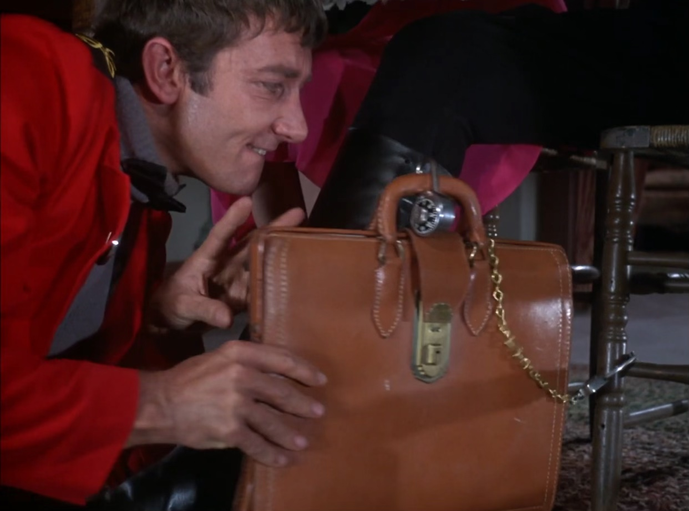
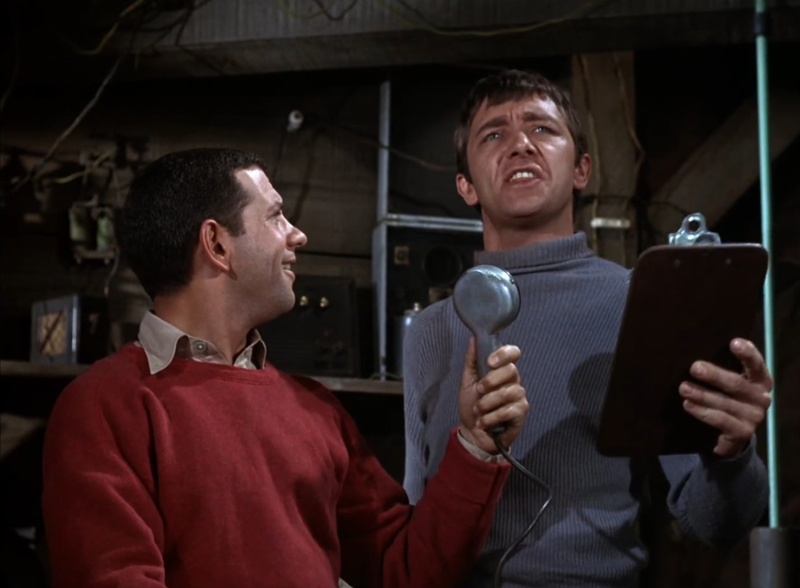
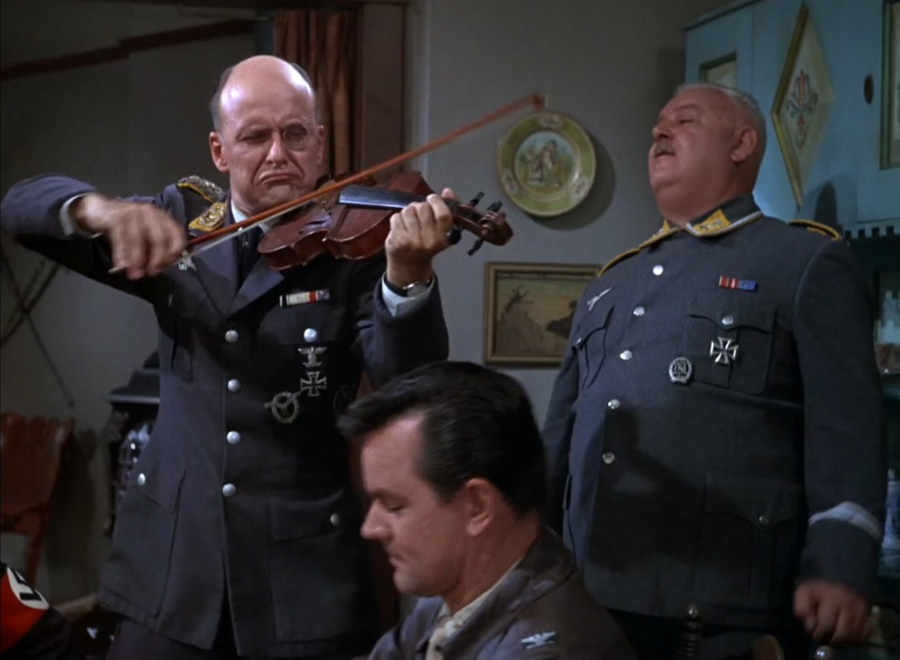
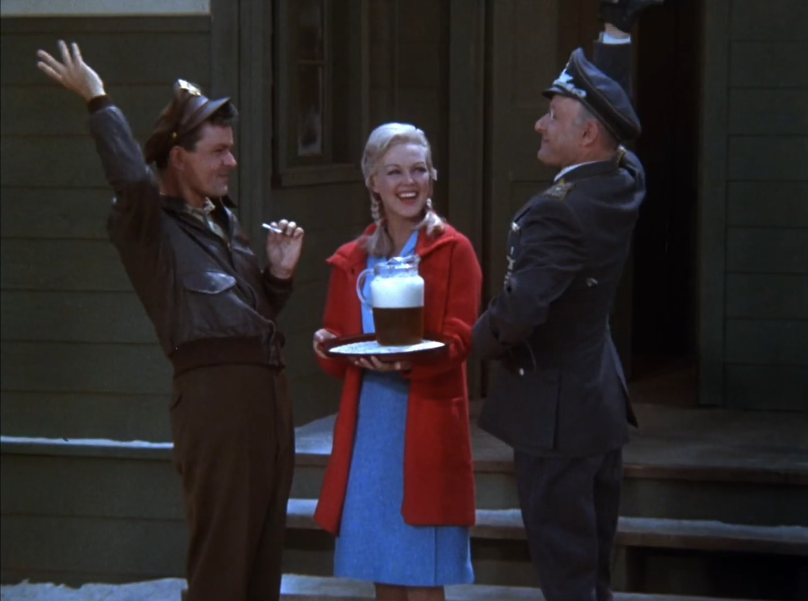

S01E08 - Movies are your Best Escape
While watching Movies are Your Best Escape, you will find that it is in fact television that is your best escape. This is a satisfying episode of Hogan’s Heroes with a briefcase heist, RAF pilots posing as German officers, and a ploy to convince Klink the war goes poorly.
There are several key moments that make this episode special. The first of which is when Hogan barges in to Klink’s office pushing into the soldier standing at guard on the other side. Hogan plays it off cool with an “Easy boy, down, now!” While saluting Klink. There is no way this would pass in real life but it really builds the image of Hogan having all the power here. Klink has no control at all. Hogan convinces the general to join them for a gourmet dinner in celebration of the “repeal of prohibition”, a true American holiday if I ever did hear of one!
Newkirk pretending to drop a wine glass and during the clean up, picking the briefcase’s lock, is the main event here. However, for me, the winning element is the repetition of orders. Once again another moment where Klink is second to the prisoners. “More wine for the general” is echoed by Hogan, then Klink, then Newkirk. Very reminiscent of the “prepare to fast forward” scene in SpaceBalls. It’s a small gag, sure, but to me its the cherry on top.
Klink’s strangulation of a cat, or “violin recital” as he calls it, is a symphony for the soul. “You won’t believe what he does to a violin!” Is the understatement of the century from Colonel Hogan. Mozart, Beethoven, get lost! If the war never happened perhaps we’d see this side of Klink flourish. I suppose we were robbed of this.
Hitler impersonations happen more often than you may think, especially in the world of Hogan’s Heroes. In this episode we are treated to Newkirk’s interesting rendition. Not only is it convincing enough for Klink to believe it, but it is topped off with the golden line, “Keep smiling.” A truly Hitler-esque statement? No, but its delivery is divine.
Part of the plan to extradite the secret documents to England is to sneak them out with two downed RAF pilots who have been hiding in the tunnel. The emergency tunnel is instantly ruled out as their escape route due to “Too much German activity”. How inconvenient!
After convincing Klink Germany is close to surrender, the RAF men, posing as an archival camera crew from Berlin, enter the camp with a camera preloaded with the roll of secret documents. Klink delivers an artistic interpretation of how Stalag 13 is run - his directorial debut. Personally I’d love to see the end result, I can only imagine the cinematography is second only to Kubrick. It would serve his purposes to portray himself as a true humanitarian in hopes the invading Allied forces will be kind to him.
Without spoiling the entire episode, the plan does not run smoothly. But as far as plot roadblocks go, they closer resemble speed bumps. In fact there is very little that goes wrong more than a few minor nuisances. This is my biggest gripe with this episode. It is full of laughs and although it barely entertains the idea of any conflict or drama, it is enjoyable and the story is engaging but predictable.
I would score this episode highly on re-watchability due to some absolute classic Hogan’s Heroes moments. Overall, it is just another episode among many others like it.